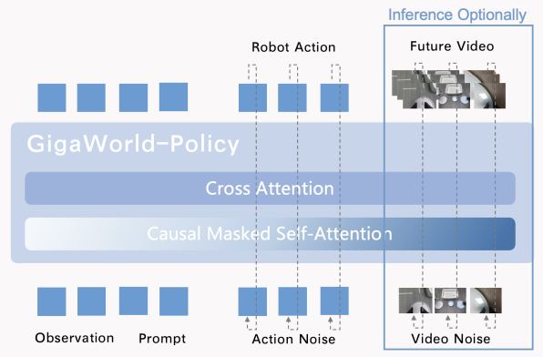
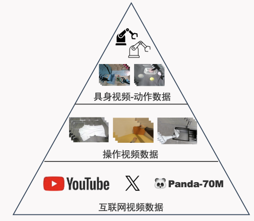
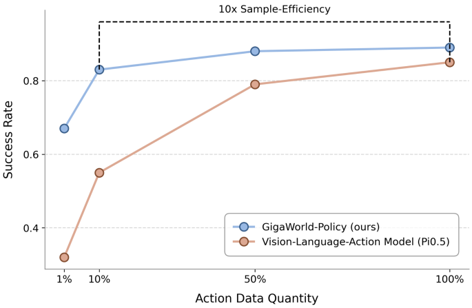

基于预训练视频生成骨干初始化的世界-动作模型（World–Action Models）在机器人策略学习中展现出巨大潜力。然而，现有方法存在两项关键瓶颈，限制了性能与实际部署：其一，需要同时对未来视觉动态与对应动作进行推理，带来显著的推理开销；其二，联合建模会耦合视觉与运动表征，使动作预测精度高度依赖未来视频预测质量。为此，我们提出 GigaWorld-Policy：一种以动作为中心的世界-动作模型，学习二维像素–动作动态，并支持仅动作解码以实现高效推理。我们的方法包含三项关键设计：（1）构建多层级的大规模机器人数据集，用于预训练动作条件的视频生成模型，并将其适配为机器人策略学习的骨干；（2）将策略训练拆解为两部分：模型基于当前观测预测未来动作序列，同时基于预测动作与当前观测生成未来视频；训练阶段联合使用动作预测与视频生成监督，提供更丰富的学习信号，并通过视觉动态约束鼓励更合理的动作；（3）推理阶段不再显式预测未来视频，仅保留动作预测过程。真实机器人平台实验表明，相较基线方法，GigaWorld-Policy 推理速度提升 $10\times$，单次推理仅需 $0.36$ 秒，同时任务成功率提升 $35\%$。
World–Action Models initialized from pre-trained video generation backbones have demonstrated remarkable potential for robot policy learning. However, existing approaches face two critical bottlenecks that hinder performance and practical deployment. First, simultaneous reasoning over both future visual dynamics and corresponding actions incurs substantial inference overhead. Second, joint modeling entangles visual and motion representations, making motion prediction accuracy heavily dependent on the quality of future video forecasts. Therefore, we introduce GigaWorld-Policy, an action-centered world–action model that learns 2D pixel–action dynamics while enabling action-only decoding for efficient inference. Our method features three key design innovations: (1) A multi-level, large-scale robot dataset is curated to pre-train an action-conditioned video generation model, which is then adapted as the backbone for robot policy learning; (2) We formulate robot policy training into two components: the model predicts future action sequences conditioned on the current observation, and generates future videos based on the predicted actions and the current observation. During training, the model is jointly supervised by action prediction and video generation, providing richer learning signals and encouraging more plausible actions through visual-dynamics constraints; (3) At inference time, we no longer explicitly predict future videos and retain only the action prediction process. Experimental evaluations on real-world robotic platforms demonstrate that GigaWorld-Policy achieves a $10\times$ speedup in inference compared to baseline methods, requiring merely $0.36$ seconds per inference, while simultaneously improving task success rates by $35\%$.
在 GigaWorld-Policy 中，我们创新性打造了新一代高效的世界-动作模型架构。不同于传统 WA 架构依赖低效、冗长的视频预测链路，GigaWorld-Policy 以动作为中心的模型范式突破了跨模态耦合瓶颈，从架构层面实现推理效率的跃迁式提升。
We build a new generation of efficient World–Action architecture for GigaWorld-Policy. Unlike prior WA models that rely on long and costly video prediction chains, our action-centered formulation breaks the cross-modal coupling bottleneck and delivers a leap in inference efficiency.
GigaWorld-Policy 基于轻量级世界模型 GigaWorld-0.5 构建，通过多视角拼接的紧凑表征进行未来具身操作视频的高效预测，大幅降低推理阶段的显存占用与计算成本，为实际部署提供了工业级的稳定性与可扩展性。
GigaWorld-Policy is built on the lightweight world model GigaWorld-0.5. It uses compact multi-view representations to efficiently model future embodied interaction videos, substantially reducing memory footprint and compute cost for practical deployment.
GigaWorld-Policy 在架构层面实现了统一化的多模态表征与协同建模。模型将视觉观测、机器人状态与动作序列共同映射到同一嵌入空间，使不同模态能够在同一 Transformer 主干下被一致地处理。由此，在底层结构上原生建立起跨模态语义对齐与信息融合，避免传统多分支架构中的模态割裂，并为策略学习提供更加稳定、紧耦合的表达基础。
The architecture unifies multimodal representations and joint modeling: visual observations, robot states, and action sequences are mapped into a shared embedding space and processed by a single Transformer backbone. This yields native cross-modal alignment and fusion, avoiding modality fragmentation and providing a more stable, tightly coupled basis for policy learning.
首创“训繁推简”混合范式策略模型：训练阶段通过 Causal Mask（因果掩码）机制统一建模动作 Token 与未来视觉 Token，使动作预测受益于未来视觉动态带来的高密度监督信号；推理阶段完全舍弃视频预测分支，仅保留轻量化动作生成模块，避免长序列视觉 Token 推理带来的计算冗余。
We propose a “train complex, infer simple” hybrid paradigm: during training, a causal masking mechanism jointly models action tokens and future visual tokens so that action prediction benefits from dense supervision from future dynamics; during inference, we drop the video prediction branch entirely and keep only lightweight action generation, eliminating redundant computation from long visual-token decoding.
与当前主流 WA 模型（如 Motus 及 Cosmos Policy）相比，GigaWorld-Policy 在保持策略质量的同时实现 10 倍推理速度提升，真正匹配机器人高频闭环控制的实时性需求。
Compared with mainstream WA models (e.g., Motus and Cosmos Policy), GigaWorld-Policy achieves a $10\times$ inference speedup without sacrificing policy quality, meeting the real-time requirements of high-frequency closed-loop robot control.



GigaWorld-Policy 构建了分层式高效训练 Pipeline，旨在最大化挖掘视频数据在具身动作训练中的价值，让模型以更少数据、更短时间完成具身操作策略学习。该流程包含三个递进阶段：第一、第二阶段利用海量视频数据训练世界模型 GigaWorld-0.5；第三阶段在 GigaWorld-0.5 的基础上加入具身动作数据训练 GigaWorld-Policy。
GigaWorld-Policy adopts a hierarchical, efficient training pipeline to maximize the value of video data for embodied action learning, enabling faster learning with less labeled action data. The pipeline has three stages: Stage 1–2 train the world model GigaWorld-0.5 on large-scale video data, and Stage 3 adds embodied action data to train GigaWorld-Policy on top of GigaWorld-0.5.
这种“基础能力大规模预训练 + 任务适配小样本微调”的分层范式，相较传统 VLA 训练方案，实现了整体训练效率 10 倍提升。
This layered paradigm—large-scale pre-training for general capability plus small-sample fine-tuning for task adaptation—yields a $10\times$ overall training-efficiency improvement over conventional VLA training pipelines.
实验结果表明，GigaWorld-Policy 在「成功率 - 推理速度」权衡曲线上取得了最佳平衡，唯一同时实现了高成功率与实时控制频率。如图所示，在涵盖抓取、装配、整理等 4 类典型任务的评测中：
Experiments show that GigaWorld-Policy achieves the best trade-off between success rate and inference speed, uniquely combining high task success with real-time control frequency. As shown in the figure, across four representative tasks (grasping, assembly, and rearrangement, etc.):